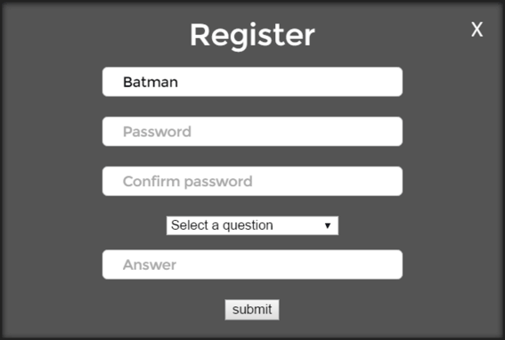
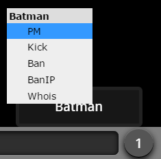

Information.
This is the help page for Awakens.me, this page explains every command that is possible in the chat.
If you still have questions after reading through this page, you can look at the bottom where there is a FAQ.
If after this you still have any questions please re-read this help page; We're not holding out on you, at least we don't think we are. ;)
DISCLAIMER: This chat may not be safe for work 'butt' who knows.
Beginers Guide.
At the bottom of your screen you'll see the input box. Go ahead and just click in that and type in your unimportant opinions.
In the input box, you'll have the capability to type in /commands.
Crash course:
Change your name by
typing /nick
UserName
Register your nick with /register
Beginner users cannot change topics or backgrounds, sorry.
Change your font with /font Lemon
Usable fonts www.google.com/fonts
Change your font color with
/color Lime
or /color 0F0
Usable colors en.wikipedia.org/wiki/Web_colors/
Every Command Ever
Information retrieval[Info]Typing /commands will display a list of available commands. Typing the command with no syntax or the incorrect syntax will display the correct usage of a command if neccesary.
/helpTyping /help will
display the help page via iframe; Allowing for a more detailed
explanation of command functions and their usages.
Note: This is currently FUCKED;
don't try it unless you want to refresh the chat.
This command will
display a basic overview of your current profile.
This will include your current Nick, Role, IP, Mask as well as if
you've registered or not.
This command will alow
you to review a brief profile of another user. Depending on your role
some features may not be available.
Basic's can see a user's Nick, Role, Mask and if that user has
registered or
not.
Admins and Gods will see all of the above; Including the IP of the user.
This will return the current Topic set in plain text.
/get noteThis will display the current Note set in plain text.
/get flairThis will display your current Flair set in plain text.
Nickname/Registration Overview[Info]This command will allow
you to set an unregistered nickname.
Example: /nick Batman
If you've registered a
nickname, you will need to login using this command.
Example: /login Batman
Password123!
See below for an example on registration.
This will allow you to
register the current nickname you have set.
Example: If your current nick
was "Robin" and you wanted to register
"Batman" then you will have to change your name with the /nick command
(as seen above.)
To register Batman, type /register and you will be presented with a
visual prompt that looks like this: 
You'll need to insert a secure password which includes a Capital, Lowercase, Number and Symbol. You'll also need to choose one of the default secret questions, or create your own; in case you ever forget your password or lose access to your account.
Not Implemented: /unregisterThis command will completely unregister your current nickname. Example: /unregister You will then be prompted to input your current password, and your account will be deleted from the system.
/change_passwordThis
command will allow you to change your password if for some reason your
password ever becomes compromised, or you're simply no longer happy
with it.
Example: /change_password
OldPassword123! NewPassword124!
This command will allow you to see IPs and users currently banned from your channel by you and other Administrators.
Not Implemented:/globalbanlistThis command is to allow Gods to see who is currently banned globally across the domain.
Banning[Info]This command will allow
you to remove unwanted guests from your channel permanently.
Example: /ban Bane
This will ban the username "Bane" from your channel.
You can provide optional reason messasges as well
Example 2: /ban Bane|You
broke
my back
Unbanning someone will
alow you to welcome them back to the channel.
Example: /unban Robin
This command is for
Gods to globally ban selected users from the domain.
Example: /globalban
Bane|Go back to the darkness
Unglobalban allows for
Gods to globally unban selected users and welcome them back to the
domain.
Example: /unglobalban
Robin|Alfred is sorry
If someone is being
annoying you can kick them. This will allow you to temporarily remove a
user from your channel either as a warning or punishment. This will for
the user to manually refresh if they wish to rejoin an take part in the
chat again.
Example: /kick TheRiddler
Again you can provide an optional message
Example 2: /kick
TheRiddle|Enough riddles wise guy
The refresh command will allow Admins and Gods to force all users of a channel to refresh the domain. The main purpose of this is to force client updates.
/bgBackground is
for stylizing a channel. It's used to inject CSS into
the page, which will change the background.
Example: /bg
url('https://www.google.ca/someimage.jpg')center /cover
/no-repeat #111
URL is the address
of the
image you'd like to use. Center is to ensure
the image appears in the center of the chat /cover ensures the picture
stretches to fit the background /no-repeat prevents a small image from
tiling and #111 is the hex color that will appear behind the image or
in any uncovered areas.
Deleting a user will
allow Gods and Admins to set a user to it's default settings removing
profile and registration information.
Example: /delete HarveyDent
The find command will
allow Gods and Admins to troubleshoot if an IP has been registered or
used by another nickname.
Example: /find 127.0.0.1
The access command
will allow Gods and Admins to set another registered user's Role.
Allowing them to appoint a role beneath their own.
View Role Overview
Example: /access Robin 1
The note command is
to set important information users should be presented with upon
joining. A great place to display your rules or advertise!
This command is only available to Admin or higher.
Example: /note Robin, don't forget to clean the Bat suit, it's filth and could use a press.
Simple Commands[Info]This
will allow you to take advantage of command private messages. Allowing
you to share secrets with another user without anyone else knowing!
Example: /pm Robin|Quick to the
Batcave!
Visual private messaging windows are also available.
You can acccess these VIA the user menu button or the commands
below.
Image Example: 
/query or /vpmQuery or VPM will allow you to take advantage of Visual PM's /query <nick> or /vpm <nick> will open a Visual PM window connecting with the user you've defined. An alternative way to access this menu is also VIA the user menu button.
Image Example:
/topicThis command will allow you to set a topic of conversation for the current channel. The topic command is currently only available to Mods or higher.
Example: /topic How'd you find the Batcave?
Style and Customizations[Info]/color or /colour will
change your message color on the chat. (To change your name font, color
and style see
/flair information.)
Example: /color Lime or /color 0f0
See all of the colors available: http://en.wikipedia.org/wiki/Web_colors
This command will allow
you to apply any Google Font to your
Example: /font MS Comic Sans
(Fonts are case sensitive, meaning you need to use capitals when
indicated.)
See all of the fonts available: http://google.com/fonts
The flair command will
allow you to add a color, font and style of your current nickname.
Example: /flair #redNickname
Indepth Example: For easy
review I will provide two references one with 'Nickname' and another as
if my name was 'Robin'
Creating a basic flair:
/flair #redNickname
/flair #redRobin
Adding a font:
/flair $font|nickname
/flair $Play|Robin
Adding a font and
colour.
/flair $font|#colornickname
/flair
$Play|#redRobin
Adding an
additional style:
/flair $font|/*#colornickname
/flair
$Play|/*#redRobin
Adding additional
colors and styles:
/flair
$font|/*#colorus#colorer#colorname
/flair
$Play|/*#red/^/^Ro#blueb#greenin
Usable fonts http://www.google.com/fonts
Usable colors http://en.wikipedia.org/wiki/Web_colors
Styles are to add bold, italic, or just
plain fun to your messages.
The set up for styles are pretty simple.
Just type: /style /*/%
("/*" is bold)
("/%" is for italic)
(See further styles below.)
Remove your styles with Bugged:/style
none (Currently you must type
"/style " = "/style(space)(space)"
If you don't want bold
appended to every message, add the style code to
your messages manually as done in the examples below.
Example: /* Hi there everyone!
Only want part of a message stylized?
Example2: /* Hi there|
everyone!
The "|" symbol tells the style to stop. So now only "Hi there" will be
bold and "everyone!" will appear in regular text.
Echo will send a
message that only you can see.
It's designed for testing colors and junk.
Example: /echo #red Hello
/me is a fairly
universal command used to act out an action.
Example: /me goes to the Batcave
Which will reply "**
Batman goes to the Batcave **"
Looking to kill some
time? Everyone in your channel AFK?
/snake is exactly what you think it is; mindless fun.
/snake not doing it for
you?
Crank it up a notch with our personal touch on the classic. :)
Clear will remove all of the previous messages from your page. It only effects you and does not remove the text from anyone else's screen.
/muteThis will allow you to mute or unmute all chat sounds from your client.
/toggle imagesThis will stop the automatic thumb-nailing of the images posted to on your client.
/toggle bgThis will disable the current background and return it to default on your screen.
/safeThis will immediately
turn off images, backgrounds and sounds.
If you are at school or work, this command is ideal.
This will immediately
turn on images, backgrounds and sounds.
If you're no longer at school or work, this command will reverse the
effect of /safe.
A: Check out the flair information on this page!
Q: How do I get a hat?A: All
donors of $5USD+
will get their choice of a pre-made hat. 12USD+ We
will have our resident artist draw a personal request for you; as
thanks for your support of the Awakens team!
A:
If you would like to to donate any amount, simply
click the big donate button
at the top of the page or you can use the Not
Implemented:/donate
command.